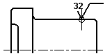
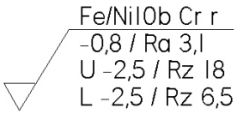
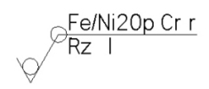
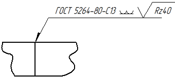

Surface Texture Symbol command
The Surface Texture Symbol command places a surface texture symbol that conforms to widely accepted standards for engineering drawings. Surface texture symbols indicate smoothness or roughness on a surface. You can set options for controlling the type of surface texture symbol you want to place.

Multiple-line and single-line surface texture symbols are supported.


You can also place a surface texture symbol on a weld symbol when the GOST weld symbol option is set on the Drawing Standards tab (Solid Edge Options dialog box.

To ensure that the shelf line extends the full length of the annotation text, you can enter a non-zero value in the Symbol overline extension option on the Annotation tab in the Dimension Style dialog box. In the first surface texture symbol shown below, the length of the line is the default value, 0.0.